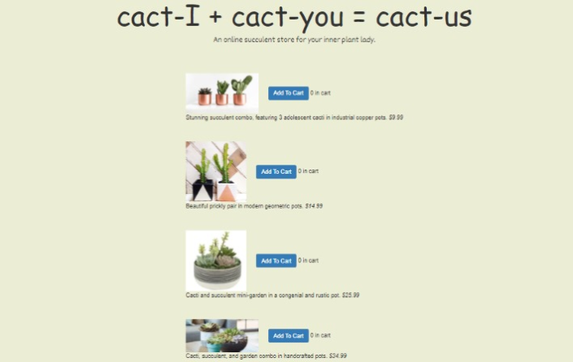

Overview
This project is aimed at performing an A/B test and statistical analysis to gather insight into two different UI designs of an online cactus shop website.
Version A

Version B
Statistical Tests
I will run statistical tests for two metrics: Time to Completion and Return Rate. For each metric, I will have a set of hypotheses (null and alternative hypotheses) and reasoning behind the alternative hypotheses.
Time to Completion
Time to Completion refers to the time it takes to complete the desired task (in this case, order cacti). I will perform a t-test for the difference of means.
Null hypothesis: Interface B is no better than interface A in reducing users’ time to completion.
Alternative hypothesis: Interface B takes users’ less time to complete the order than interface A.
The reasoning behind the alternative hypothesis is that the layout of interface B, including the emphasized title, differentiation of font size and centered items make the hierarchy of the online shop, which is more user-friendly. Hopefully it would make users more comfortable to add items to cart without moving eyes to the far left, which may lead to less time for ordering.
Return Rate
Return Rate refers to the number of times a user returned to the page. Since this is a categorical feature (return or not), I will perform chi^2-test for homogeneity.
Null hypothesis: Interface B is no better than interface A in reducing users’ return rate.
Alternative hypothesis: Interface B has a lower return rate than interface A.
The reasoning behind the alternative hypothesis is that the layout of interface B, especially keeping everything centered, makes it more affordable and understandable for users’ ordering behaviours. In this case, they will not be back to the page to check once they finish ordering.
Data Collection
For the A/B test, I collected data from about 24 user sessions, both from my peers during the studio and friends outside of the class. The URL is designed to open version A 50% of the time, and version B the other 50%. The task is to fill the cart with at least $150 of cacti/succulents.
After extracting the logs and cleaning the data, I ran the data with Python scripts to perform a t-test and a chi^2-test.
Conclusions
The infographic below shows the results and conclusions from each statistical test.
Infographic of A/B Testing
The broad takeaways on general A/B testing after walking through this simple experiment are:
- Both results fail to reject the null hypothesis, which may be different from intuition. The limitation of this test is that the sample size is too small and most of the population is my peers who are familiar with the cactus shop. In this case, the result may be biased.
- The two layouts do make some differences if we simply look at the average time spent on completing the task, although it is not statistically significant. I am a little bit hesitant to draw the conclusion that visual design, including hierarchy and layout do contribute to the affordance of the design. I believe things will be clear with more comprehensive sample data